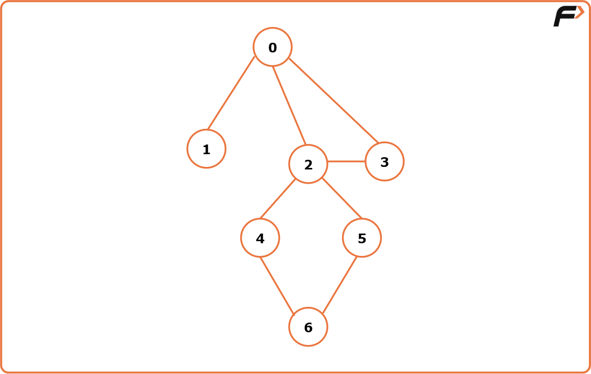
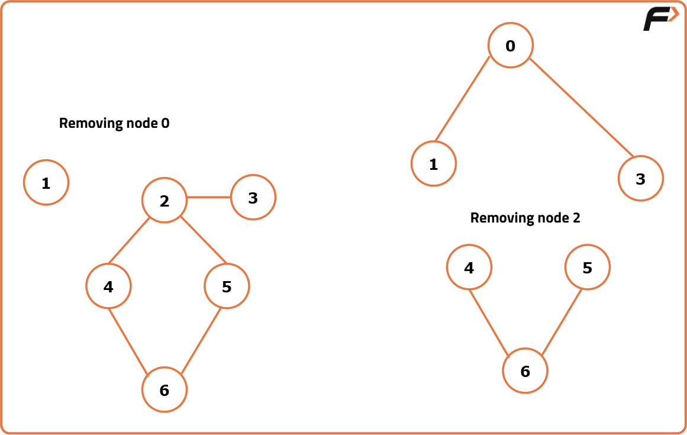
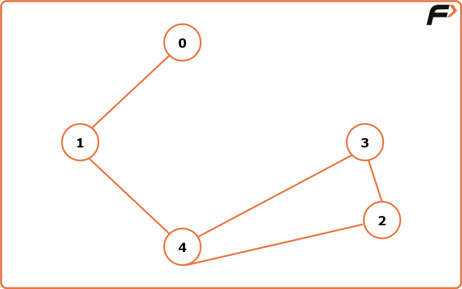

Articulation Point in Graph: G-56
Problem Statement: Find all articulation points (cut vertices) in an undirected graph whose removal increases the number of connected components.
Examples
Example-1
Result-{0,2}
Explanation: If we remove node 0 or node 2, the graph will be divided into 2 or more components.


Example 2:
Input Format:

Result={1,4}
Explanation: If we remove either node 1 or node 4, the graph breaks into multiple components.
Disclaimer: Here is the practice link to help you assess your knowledge better. It's highly recommend trying to solve it before looking at the solution.
Approach
Algorithm
- Create the adjacency list using the given edges (if not already provided).
- Initialize a variable
timer(globally or pass it in DFS) to keep track of the discovery time of each node. Thetimeris usually initialized to 0 or 1.
- Start DFS for unvisited nodes.
- The starting node should have
parent = -1.
- Mark the current node as visited.
- Store:
tin[node]→ time of insertion (discovery time).low[node]→ lowest reachable insertion time.
- Initialize a variable
child = 0to handle the special case for the starting node.
- If the adjacent node is the parent: continue to the next node.
- If the adjacent node is not visited:
- Call DFS for this adjacent node (
dfs(adjNode, node)). - After returning from DFS, update →
low[node] = min(low[node], low[adjNode]). - Check articulation condition:
- If
low[adjNode] ≥ tin[node]andparent != -1, then mark node as an articulation point.
- If
- Increment
child++.
- Call DFS for this adjacent node (
- If the adjacent node is already visited: Update →
low[node] = min(low[node], tin[adjNode]).
- If
parent == -1andchild > 1, then mark this starting node as an articulation point.
- After DFS completes, the answer (hash/boolean array) will store all articulation points.
low[], we do not consider the parent node or already visited nodes, as they themselves may be articulation points and could be removed.Code
#include <bits/stdc++.h>
using namespace std;
class Solution {
private:
int timer = 1;
// DFS to find articulation points
void dfs(int node, int parent, vector<int> &vis, int tin[], int low[],
vector<int> &mark, vector<int> adj[]) {
vis[node] = 1;
tin[node] = low[node] = timer++; // set discovery and low time
int child = 0;
for (auto it : adj[node]) {
if (it == parent) continue; // skip the edge to parent
if (!vis[it]) {
dfs(it, node, vis, tin, low, mark, adj); // recursive DFS
low[node] = min(low[node], low[it]); // update low time
// Check articulation condition (excluding root)
if (low[it] >= tin[node] && parent != -1) {
mark[node] = 1;
}
child++;
}
else {
// back edge case
low[node] = min(low[node], tin[it]);
}
}
// If root node has more than one child
if (parent == -1 && child > 1) {
mark[node] = 1;
}
}
public:
vector<int> articulationPoints(int n, vector<int> adj[]) {
vector<int> vis(n, 0), mark(n, 0);
int tin[n], low[n];
for (int i = 0; i < n; i++) {
if (!vis[i]) {
dfs(i, -1, vis, tin, low, mark, adj);
}
}
vector<int> ans;
for (int i = 0; i < n; i++) {
if (mark[i]) ans.push_back(i);
}
return ans.empty() ? vector<int>{-1} : ans;
}
};
int main() {
int n = 5;
vector<vector<int>> edges = {
{0, 1}, {1, 4}, {2, 4}, {2, 3}, {3, 4}
};
vector<int> adj[n];
for (auto e : edges) {
adj[e[0]].push_back(e[1]);
adj[e[1]].push_back(e[0]);
}
Solution sol;
vector<int> res = sol.articulationPoints(n, adj);
for (int v : res) cout << v << " ";
cout << endl;
return 0;
}
Complexity Analysis